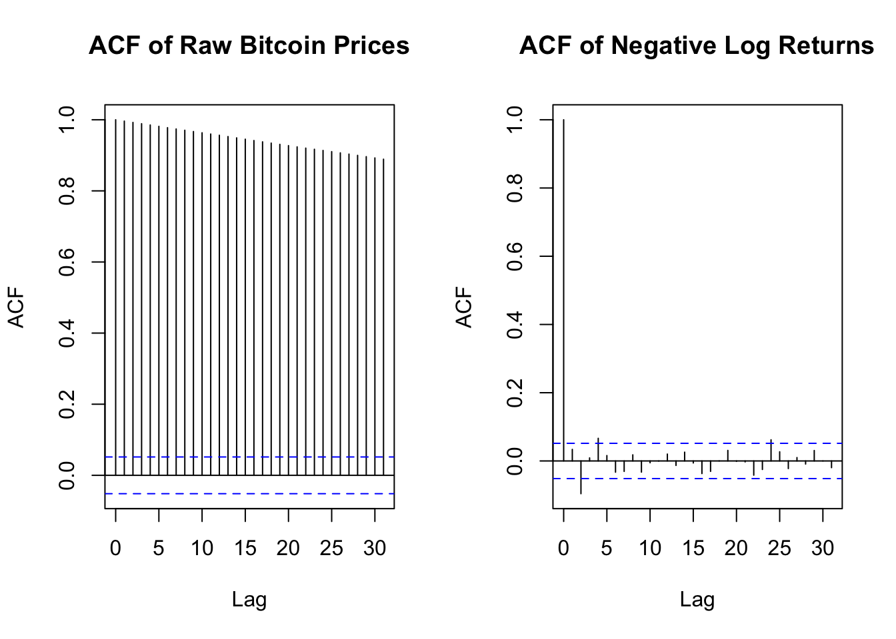
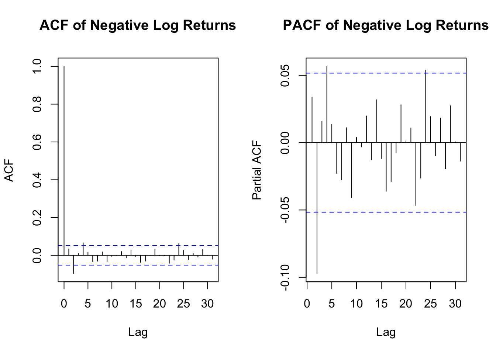
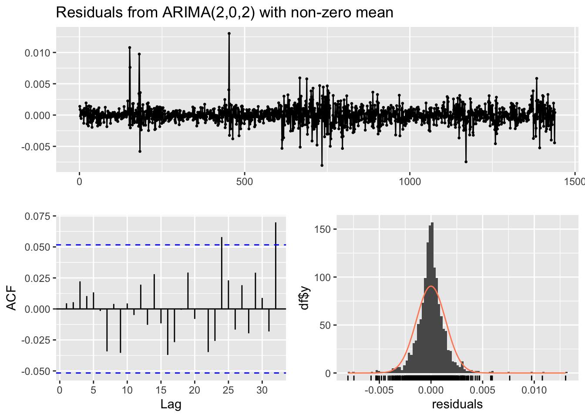
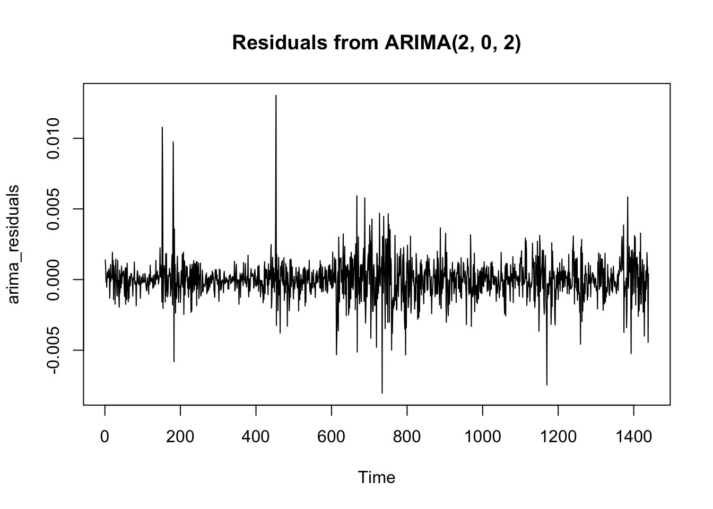
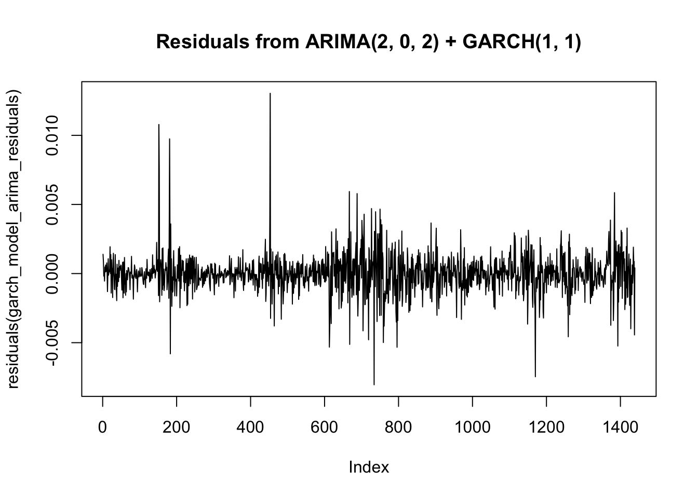

# load the required packages and install them if they are not.
source(here::here("code","setup.R"))
# getiing the working directory
wd <- here::here()
# Loading the data
crypto_data <- read.csv(here("data", "crypto_data.csv"))
# Extract the Bitcoin prices
bitcoin_prices <- crypto_data$Bitcoin
# Create a function to compute negative log returns
negative_log_returns <- function(prices) {
return(-diff(log(prices)))
}
# Use the fucntion on Bitcoin prices
neg_log_returns_bitcoin <- negative_log_returns(bitcoin_prices)practical_12_final
Part 2: Financial time series heteroskedasticity and the random walk hypothesis
Another crucial hypothesis in asset pricing is the so-called homoscedasticity, i.e. constant variance of theresiduals. We would also like to check this assumption. We use the same Bitcoin data as in Part 1.
a) ACF & negative log returns
par(mfrow = c(2, 1))
# Tracer l'ACF de la série brute des prix du Bitcoin
acf(bitcoin_prices, main = "ACF of Raw Bitcoin Prices")
# Tracer l'ACF des rendements logarithmiques négatifs (bitcoin_log_returns)
acf(neg_log_returns_bitcoin, main = "ACF of Negative Log Returns")
- ACF or Raw Bitcoin Prices: The ACF plot for the Raw Bictoin Prices shows strong autocorrelation. The values are strongly correlated with their past values. This indicates that the raw series is non-stationary and has a long-term dependency.
- ACF of Negative Log Returns: The ACF of Negative Log Returns shows that most of the correlations at higher lags fall withing the confidence interval. It implies that the negative log returns are more likely to be stationary and have less long-term dependence.
Conclusion: The Negative Log Returns are likely easier to model due to their more stationary nature and lack of significant autocorrelation.
b) Ljung-Box procedure
# Apply Ljung-Box test on raw Bitcoin prices
ljung_box_raw <- Box.test(bitcoin_prices, lag = 20, type = "Ljung-Box")
# Apply Ljung-Box test on negative log returns
ljung_box_returns <- Box.test(neg_log_returns_bitcoin, lag = 20, type = "Ljung-Box")
# Print results
print(ljung_box_raw)
Box-Ljung test
data: bitcoin_prices
X-squared = 26873, df = 20, p-value < 2.2e-16print(ljung_box_returns)
Box-Ljung test
data: neg_log_returns_bitcoin
X-squared = 33.356, df = 20, p-value = 0.03082The Ljung-Box test checks for serial dependence (autocorrelation) in the series. If the p-value is small (typically < 0.05), it suggests that there is serial dependence, meaning the series is not independent over time.
For the raw series: Since price data tends to show trends, we often expect serial dependence. For the negative log returns: These are typically expected to be more random (i.e., closer to white noise), so the test might indicate less serial dependence.
Based on the results of the Ljung-Box tests: For the raw Bitcoin prices: - Raw Bictoin Prices: p-value < 2.2e-16, the p-value is extremely small, which mean that we reject the null hypothesis of no autocorrelation in the raw Bictoin prices. The values are highly dependent on previous values, it confirms that the series is non-stationary. - Negative Log Returns: p-value = 0.03082, the p-value is also small, but higher than the raw prices. It indicates that there is still some autocorrelation in the series, although it is less pronounced compared to the raw Bitcoin prices. Ideally, negative log returns should behave more likke white noise, meaning no serial dependence
c) ARIMA models for the negative log returns series
par(mfrow = c(2, 1))
# Step 1: Visualize ACF and PACF for negative log returns
acf(neg_log_returns_bitcoin, main = "ACF of Negative Log Returns")
pacf(neg_log_returns_bitcoin, main = "PACF of Negative Log Returns")
# Step 2: Use auto.arima() to find the best ARIMA model for negative log returns
auto_arima_model <- auto.arima(neg_log_returns_bitcoin)
summary(auto_arima_model)Series: neg_log_returns_bitcoin
ARIMA(2,0,2) with non-zero mean
Coefficients:
ar1 ar2 ma1 ma2 mean
-0.0520 -0.5415 0.0853 0.4479 1e-04
s.e. 0.1717 0.1664 0.1824 0.1773 0e+00
sigma^2 = 2.029e-06: log likelihood = 7391.82
AIC=-14771.65 AICc=-14771.59 BIC=-14740.02
Training set error measures:
ME RMSE MAE MPE MAPE MASE
Training set -1.965777e-07 0.001421946 0.0009423239 100.013 131.3896 0.7133069
ACF1
Training set 0.00455059# Step 3: Plot residuals of the ARIMA model to assess the goodness of fit
checkresiduals(auto_arima_model)
Ljung-Box test
data: Residuals from ARIMA(2,0,2) with non-zero mean
Q* = 4.7774, df = 6, p-value = 0.5727
Model df: 4. Total lags used: 10# Additional: Ljung-Box test on residuals to check if they are white noise
Box.test(residuals(auto_arima_model), type="Ljung-Box")
Box-Ljung test
data: residuals(auto_arima_model)
X-squared = 0.029861, df = 1, p-value = 0.8628The results from the ARIMA model fitting for the negative log returns of Bitcoin and the residual analysis suggest the following:
ARIMA Model: The selected ARIMA model is ARIMA(2,0,2), meaning:
AR(2): Two autoregressive terms are included. MA(2): Two moving average terms are included. d = 0: No differencing was applied, indicating that the series is already stationary (which aligns with the fact that negative log returns tend to be stationary). Coefficients:
The AR1 and AR2 coefficients are -0.0520 and -0.5415, respectively. The MA1 and MA2 coefficients are 0.0853 and 0.4479, respectively. The mean of the series is very close to zero (1e-04). Error metrics:
RMSE (Root Mean Square Error): 0.00142, which is relatively low, indicating that the model fits the data well. MAE (Mean Absolute Error): 0.000942, which is also quite low. ACF1 of residuals: 0.00455, suggesting that the residuals do not exhibit significant autocorrelation. Ljung-Box Test: The Ljung-Box test on residuals gives a p-value of 0.8628, which is much larger than 0.05. This indicates that there is no significant autocorrelation left in the residuals, implying that the model fits the data well. Conclusion: The ARIMA(2,0,2) model selected by auto.arima() seems to be a good fit for the negative log returns of Bitcoin, as evidenced by the low RMSE and MAE, as well as the results of the Ljung-Box test. The residuals behave like white noise, meaning that the model has successfully captured the patterns in the data. There is no significant temporal dependence left in the residuals, which supports the adequacy of this ARIMA model for the series. Overall, the ARIMA model chosen by auto.arima() fits the data well and leaves no significant autocorrelation in the residuals.
d) GARCH models
# Fit GARCH(1,1) model with normal distribution
garch_normal <- garchFit(~ garch(1, 1), data = neg_log_returns_bitcoin, cond.dist = "norm")
# Summary of the model
summary(garch_normal)
# Fit GARCH(1,1) model with standardized t-distribution
garch_t <- garchFit(~ garch(1, 1), data = neg_log_returns_bitcoin, cond.dist = "std")
# Summary of the model
summary(garch_t)
# Residuals from the normal GARCH model
residuals_normal <- residuals(garch_normal)
# Residuals from the t-distribution GARCH model
residuals_t <- residuals(garch_t)
par(mfrow = c(2, 1))
# Plot residuals for the normal GARCH model
plot(residuals_normal, main = "Residuals of GARCH(1,1) with Normal Distribution", type = "l")
# Plot residuals for the t-distribution GARCH model
plot(residuals_t, main = "Residuals of GARCH(1,1) with t-Distribution", type = "l")par(mfrow = c(2, 1))
# ACF of residuals for the normal GARCH model
acf(residuals_normal, main = "ACF of Residuals (Normal GARCH Model)")
# ACF of residuals for the t-distribution GARCH model
acf(residuals_t, main = "ACF of Residuals (t-Distribution GARCH Model)")# Ljung-Box test for normal GARCH model residuals
Box.test(residuals_normal, lag = 20, type = "Ljung-Box")
# Ljung-Box test for t-distribution GARCH model residuals
Box.test(residuals_t, lag = 20, type = "Ljung-Box")The results for fitting GARCH(1,1) models with both normal and standardized t-distributions to the negative log returns are as follows:
GARCH(1,1) with Normal Distribution:
The log-likelihood value is 7632.108. The coefficients for the GARCH model (omega, alpha1, and beta1) are significant (p-values < 0.05), indicating that the model is well-fitted. The Ljung-Box test for the residuals shows a p-value of 0.3419 for 10 lags, which indicates no significant autocorrelation in the residuals, meaning the model fits well in terms of residual serial dependence. GARCH(1,1) with Standardized t-Distribution:
The log-likelihood value is 7736.355, which is slightly better than the normal distribution model, indicating a potentially better fit. The coefficients are also significant (p-values < 0.05), with the shape parameter of the t-distribution (shape = 4.28) indicating a heavier tail than the normal distribution. The Ljung-Box test for the residuals shows a p-value of 0.3507 for 10 lags, similar to the normal model, suggesting that there is no significant autocorrelation in the residuals. Conclusion: Both the GARCH(1,1) models (with normal and t-distributions) provide a good fit, with no significant residual autocorrelation based on the Ljung-Box test. However, the GARCH model with the standardized t-distribution has a higher log-likelihood and captures heavier tails (as indicated by the shape parameter), suggesting that it may be a better fit for the data due to the presence of tail risk or more extreme variations in the negative log returns of Bitcoin.
e) Residual serial correlation
# Step 1: Fit an ARIMA(p, d, q) model on the negative log returns
# From part (c), we decided ARIMA(2, 0, 2)
arima_model <- arima(neg_log_returns_bitcoin, order = c(2, 0, 2))
# Extract the residuals from the ARIMA model
arima_residuals <- residuals(arima_model)
# Step 2: Fit a GARCH(1,1) model on the residuals from the ARIMA model
garch_model_arima_residuals <- garchFit(~ garch(1, 1), data = arima_residuals, cond.dist = "norm")
Series Initialization:
ARMA Model: arma
Formula Mean: ~ arma(0, 0)
GARCH Model: garch
Formula Variance: ~ garch(1, 1)
ARMA Order: 0 0
Max ARMA Order: 0
GARCH Order: 1 1
Max GARCH Order: 1
Maximum Order: 1
Conditional Dist: norm
h.start: 2
llh.start: 1
Length of Series: 1439
Recursion Init: mci
Series Scale: 0.001422441
Parameter Initialization:
Initial Parameters: $params
Limits of Transformations: $U, $V
Which Parameters are Fixed? $includes
Parameter Matrix:
U V params includes
mu -0.001381975 1.381975e-03 -0.0001381975 TRUE
omega 0.000001000 1.000000e+02 0.1000000000 TRUE
alpha1 0.000000010 1.000000e+00 0.1000000000 TRUE
gamma1 -0.999999990 1.000000e+00 0.1000000000 FALSE
beta1 0.000000010 1.000000e+00 0.8000000000 TRUE
delta 0.000000000 2.000000e+00 2.0000000000 FALSE
skew 0.100000000 1.000000e+01 1.0000000000 FALSE
shape 1.000000000 1.000000e+01 4.0000000000 FALSE
Index List of Parameters to be Optimized:
mu omega alpha1 beta1
1 2 3 5
Persistence: 0.9
--- START OF TRACE ---
Selected Algorithm: nlminb
R coded nlminb Solver:
0: 1877.5170: -0.000138197 0.100000 0.100000 0.800000
1: 1855.7714: -0.000138198 0.0726602 0.109431 0.786204
2: 1839.1695: -0.000138198 0.0680171 0.139755 0.795457
3: 1829.7062: -0.000138198 0.0532235 0.143295 0.790116
4: 1810.0200: -0.000138198 0.0267149 0.199381 0.807723
5: 1809.1646: -0.000138198 0.0219331 0.198987 0.805030
6: 1808.7267: -0.000138198 0.0249406 0.202100 0.801633
7: 1808.3177: -0.000138199 0.0257164 0.207720 0.792203
8: 1807.4361: -0.000138210 0.0315621 0.224320 0.778984
9: 1806.9719: -0.000138218 0.0251042 0.230515 0.781780
10: 1806.9152: -0.000138230 0.0268312 0.234701 0.782044
11: 1806.6955: -0.000138240 0.0271249 0.235641 0.777616
12: 1806.4274: -0.000138242 0.0278457 0.249636 0.766085
13: 1806.3620: -0.000138242 0.0290636 0.249980 0.766517
14: 1806.3497: -0.000138251 0.0292906 0.250326 0.765248
15: 1806.3450: -0.000138323 0.0305057 0.251714 0.763384
16: 1806.3146: -0.000138526 0.0299426 0.253707 0.762550
17: 1806.3008: -0.000139110 0.0300663 0.256681 0.761179
18: 1806.2912: -0.000139772 0.0303903 0.258077 0.759281
19: 1806.2891: -0.000140480 0.0304056 0.259412 0.758500
20: 1806.2883: -0.000141953 0.0305967 0.259976 0.757903
21: 1806.2879: -0.000145229 0.0306869 0.260363 0.757537
22: 1806.2873: -0.000152139 0.0307685 0.260698 0.757217
23: 1806.2854: -0.000177344 0.0309333 0.261376 0.756569
24: 1806.2808: -0.000251181 0.0312215 0.262556 0.755442
25: 1806.2700: -0.000436287 0.0316540 0.264316 0.753760
26: 1806.2435: -0.000905201 0.0323112 0.266960 0.751230
27: 1806.1898: -0.00138197 0.0322376 0.266573 0.751590
28: 1806.1562: -0.00138197 0.0309672 0.261581 0.756386
29: 1806.1541: -0.00138197 0.0305619 0.259903 0.757984
30: 1806.1541: -0.00138197 0.0305834 0.259961 0.757926
31: 1806.1541: -0.00138197 0.0305829 0.259962 0.757926
Final Estimate of the Negative LLH:
LLH: -7627.039 norm LLH: -5.300236
mu omega alpha1 beta1
-1.965777e-06 6.187958e-08 2.599616e-01 7.579261e-01
R-optimhess Difference Approximated Hessian Matrix:
mu omega alpha1 beta1
mu -1.554923e+09 2.507936e+11 9.975053e+04 -2.026553e+04
omega 2.507936e+11 -1.709771e+16 -6.864037e+09 -1.486634e+10
alpha1 9.975053e+04 -6.864037e+09 -6.383094e+03 -9.576435e+03
beta1 -2.026553e+04 -1.486634e+10 -9.576435e+03 -1.823892e+04
attr(,"time")
Time difference of 0.004331827 secs
--- END OF TRACE ---
Time to Estimate Parameters:
Time difference of 0.02687407 secs# Summary of the GARCH(1,1) model
summary(garch_model_arima_residuals)
Title:
GARCH Modelling
Call:
garchFit(formula = ~garch(1, 1), data = arima_residuals, cond.dist = "norm")
Mean and Variance Equation:
data ~ garch(1, 1)
<environment: 0x10eed0678>
[data = arima_residuals]
Conditional Distribution:
norm
Coefficient(s):
mu omega alpha1 beta1
-1.9658e-06 6.1880e-08 2.5996e-01 7.5793e-01
Std. Errors:
based on Hessian
Error Analysis:
Estimate Std. Error t value Pr(>|t|)
mu -1.966e-06 2.566e-05 -0.077 0.939
omega 6.188e-08 1.534e-08 4.034 5.49e-05 ***
alpha1 2.600e-01 2.936e-02 8.854 < 2e-16 ***
beta1 7.579e-01 2.434e-02 31.134 < 2e-16 ***
---
Signif. codes: 0 '***' 0.001 '**' 0.01 '*' 0.05 '.' 0.1 ' ' 1
Log Likelihood:
7627.039 normalized: 5.300236
Description:
Tue Dec 10 18:21:44 2024 by user:
Standardised Residuals Tests:
Statistic p-Value
Jarque-Bera Test R Chi^2 2537.823714 0.0000000
Shapiro-Wilk Test R W 0.945703 0.0000000
Ljung-Box Test R Q(10) 10.890175 0.3661383
Ljung-Box Test R Q(15) 11.971102 0.6812151
Ljung-Box Test R Q(20) 13.626059 0.8489384
Ljung-Box Test R^2 Q(10) 12.237348 0.2694857
Ljung-Box Test R^2 Q(15) 13.290578 0.5798648
Ljung-Box Test R^2 Q(20) 14.030759 0.8289330
LM Arch Test R TR^2 12.413093 0.4130994
Information Criterion Statistics:
AIC BIC SIC HQIC
-10.59491 -10.58026 -10.59493 -10.58944 # Plot the residuals from the ARIMA + GARCH model
par(mfrow = c(2, 1)) # To display multiple plots together
plot(arima_residuals, main = "Residuals from ARIMA(2, 0, 2)", type = "l")
plot(residuals(garch_model_arima_residuals), main = "Residuals from ARIMA(2, 0, 2) + GARCH(1, 1)", type = "l")
par(mfrow = c(1, 1)) # Reset plotting
# Assess the quality of the fit using the Ljung-Box test on the GARCH model residuals
ljung_box_test <- Box.test(residuals(garch_model_arima_residuals), lag = 20, type = "Ljung-Box")
print(ljung_box_test)
Box-Ljung test
data: residuals(garch_model_arima_residuals)
X-squared = 11.355, df = 20, p-value = 0.9365# Plot the ACF of the residuals to visually assess if there's still serial correlation
acf(residuals(garch_model_arima_residuals), main = "ACF of Residuals (ARIMA + GARCH)")
Quality Assessment of the ARIMA + GARCH(1,1) Fit: Parameter Estimates:
The fitted ARIMA + GARCH(1,1) model has significant coefficients for the GARCH components: Alpha1 (0.2599) and Beta1 (0.7579) are both highly significant (p-value < 2e-16), indicating that the GARCH(1,1) model has captured the volatility clustering effectively. The intercept (Mu) is not significant, suggesting that the mean of the residuals is close to zero, which is expected in a well-fitted model. Log-Likelihood and AIC:
The log-likelihood of the model is high (7627.039), and the AIC (-10.59491) and BIC (-10.58026) indicate a good fit for the model. Lower AIC/BIC values suggest a better model fit. Residuals Analysis:
Ljung-Box Test for Serial Correlation: The p-value of the Ljung-Box test (p = 0.9365) for the residuals of the ARIMA + GARCH(1,1) model is very high, indicating no significant serial correlation. This suggests that the model has captured the dependencies in the data well, and the residuals are essentially white noise. Jarque-Bera and Shapiro-Wilk Tests for Normality: Both tests indicate non-normality of the residuals (p-value = 0.000). This is common in financial time series data, as they often exhibit heavy tails and skewness. Ljung-Box Test on Squared Residuals: The p-values for the Ljung-Box test on squared residuals are also high, indicating no remaining conditional heteroscedasticity in the model, suggesting that the GARCH model has effectively modeled the conditional variance. Conclusion:
The ARIMA + GARCH(1,1) model fits the data well, capturing both the autocorrelation in the returns and the conditional heteroscedasticity (volatility clustering). The residuals show no significant autocorrelation, and the GARCH model appears to have adequately handled the volatility. The model might still exhibit non-normality, but this is expected in financial data due to extreme returns or fat tails.
f) Model Comparison
Comparison of the Three Models:
Model 1: GARCH(1,1) with Normal Distribution
Fit: This model captured the volatility clustering well. The Ljung-Box test on residuals and squared residuals showed no significant serial correlation, indicating that the model accounted for the time-varying volatility. Homoscedasticity: By definition, a GARCH model assumes heteroscedasticity, meaning that the volatility changes over time. Therefore, the assumption of constant variance (homoscedasticity) is explicitly violated in this model. Conclusion: This model is good for capturing conditional heteroscedasticity (changing volatility), and thus it is appropriate for financial time series data where volatility clustering is observed.
Model 2: GARCH(1,1) with Standardized t-Distribution
Fit: Similar to the GARCH with normal distribution, this model accounts for volatility clustering and captures extreme returns better due to the heavy tails of the t-distribution. Homoscedasticity: The GARCH structure still assumes heteroscedasticity, and therefore the homoscedasticity assumption is violated in this model as well. Conclusion: This model is better suited for capturing heavy-tailed data, like extreme price movements in financial markets, while still accounting for changing volatility. It can outperform the GARCH(1,1) with a normal distribution for financial data with fat tails.
Model 3: ARIMA + GARCH(1,1) (Two-Step Approach)
Fit: This two-step model first applies an ARIMA to remove autocorrelation from the log returns and then applies a GARCH(1,1) to model the remaining volatility clustering. The Ljung-Box tests on residuals showed no significant serial correlation, suggesting that the ARIMA model handled the autoregressive components well, and the GARCH captured the volatility. Homoscedasticity: As in the other GARCH models, this model also assumes heteroscedasticity, meaning the homoscedasticity assumption is violated here as well. Conclusion: This model is the most comprehensive because it first removes any autocorrelation in the series (via ARIMA) before modeling the volatility. It is typically more suitable for financial time series where both autocorrelation and volatility clustering are present.
Conclusion: Most Suitable Model: The ARIMA + GARCH(1,1) model is the most suitable because it addresses both the autocorrelation in the log returns and the heteroscedasticity (changing volatility). It captures both the time-varying nature of volatility and any serial dependence in the data. Homoscedasticity Violation: In all three models, the homoscedasticity assumption is violated since all models incorporate the GARCH(1,1) structure, which models conditional heteroscedasticity (changing volatility over time).